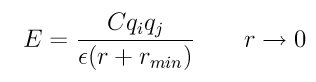

pair_style born/coul/long/cs command¶
pair_style buck/coul/long/cs command¶
Syntax¶
pair_style style args
- style = born/coul/long/cs or buck/coul/long/cs
- args = list of arguments for a particular style
born/coul/long/cs args = cutoff (cutoff2) cutoff = global cutoff for non-Coulombic (and Coulombic if only 1 arg) (distance units) cutoff2 = global cutoff for Coulombic (optional) (distance units) buck/coul/long/cs args = cutoff (cutoff2) cutoff = global cutoff for Buckingham (and Coulombic if only 1 arg) (distance units) cutoff2 = global cutoff for Coulombic (optional) (distance units)
Examples¶
pair_style born/coul/long/cs 10.0 8.0
pair_coeff 1 1 6.08 0.317 2.340 24.18 11.51
pair_style buck/coul/long/cs 10.0
pair_style buck/coul/long/cs 10.0 8.0
pair_coeff * * 100.0 1.5 200.0
pair_coeff 1 1 100.0 1.5 200.0 9.0
Description¶
These pair styles are designed to be used with the adiabatic core/shell model of (Mitchell and Finchham). See Section_howto 25 of the manual for an overview of the model as implemented in LAMMPS.
These pair styles are identical to the pair_style born/coul/long and pair_style buck/coul/long styles, except they correctly treat the special case where the distance between two charged core and shell atoms in the same core/shell pair approach r = 0.0. This needs special treatment when a long-range solver for Coulombic interactions is also used, i.e. via the kspace_style command.
More specifically, the short-range Coulomb interaction between a core and its shell should be turned off using the special_bonds command by setting the 1-2 weight to 0.0, which works because the core and shell atoms are bonded to each other. This induces a long-range correction approximation which fails at small distances (~< 10e-8). Therefore, the Coulomb term which is used to calculate the correction factor is extended by a minimal distance (r_min = 1.0-6) when the interaction between a core/shell pair is treated, as follows
where C is an energy-conversion constant, Qi and Qj are the charges on the core and shell, epsilon is the dielectric constant and r_min is the minimal distance.
Restrictions¶
These pair styles are part of the CORESHELL package. They are only enabled if LAMMPS was built with that package. See the Making LAMMPS section for more info.